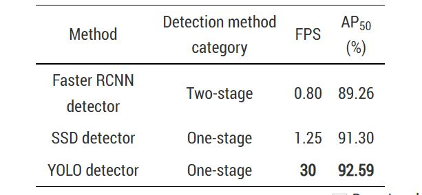

We will now look more closely at a specific example of basketball scoring detection using CNN. The goal of this system is to be able to detect when a basket has been scored by first detecting the position of the hoop, applying a greyscale filter on the hoop, and then using frame difference to detect changes in the appearance of the hoop due to the introduction of the ball into the frame.

This system takes video clips of basketball courts with the hoop in frame as inputs. Once the hoop's position has been located with YOLO, the system knows that it will not move. In this case they are assuming that the camera angle remains fixed and there is only one camera in use. For each input frame fed to the YOLO detector which is scaled to 3 different sizes with 3 different anchors for detection.

After the system has determined the location of the hoop, the following steps need only hone in on the area of the frame which contains the hoop and its direct surroundings. The current frame and the direct background are fed through 2 gates. Gate 1 translates the values of each pixel in the frame into a binary result and Gate 2 selects the holes which results from the image differences. For binary translation, pixels of objects which are in motion are marked as 1 and objects that remain stationary are marked as 0. The result is the largest hole which has been extracted and isolated which can be identified as the ball. The final step is to determine whether the object which has been detected as moving goes through the red box which marks the hoop from the previous step.

An expansive dataset of basketball hoops were utilized for training as well as videos of realtime basketball games being played from a fixed camera angle. The YOLO hoop detector used in the experiments was pretrained on the COCO dataset and given further training data from the aforementioned basketball hoop images. The learning rate is initially set to 1*10^-4 and then lowered after 20 epochs to 1*10^-6. In addition, k-means clustering was utilized in order to find the optimal anchor values.
In testing, the YOLO hoop detector was able to succesfully identify basketball hoops with an accuracy of 88.64%, with many of the failed examples being images with hoops that were either very close to the camera or very far away. They also found that input images of size 544 x 544 yielded the highest accuracy when compared to other image sizes for their given dataset. Ultimately with all of these adjustments, this YOLO hoop detector achieved better results than a RCNN based detector as well as a SSD based detector with faster results (which is very important for real-time systems).
